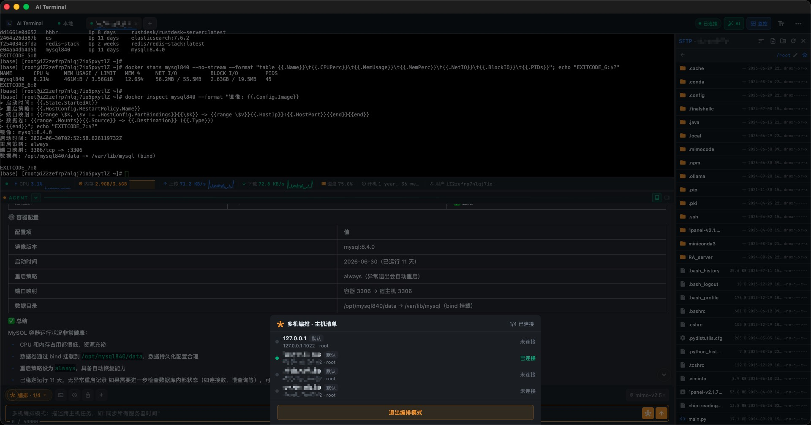
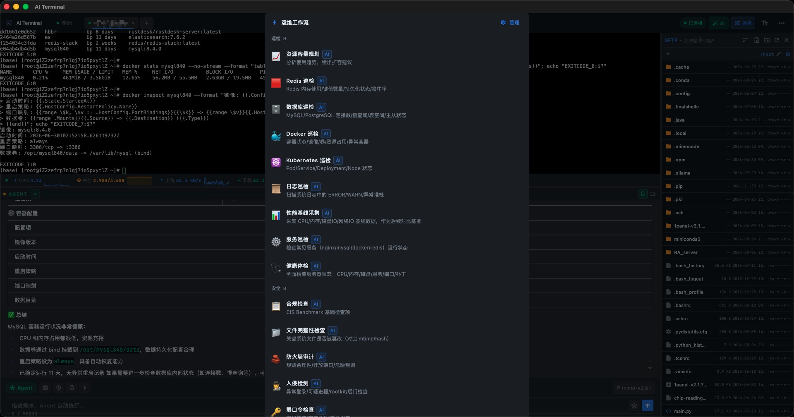
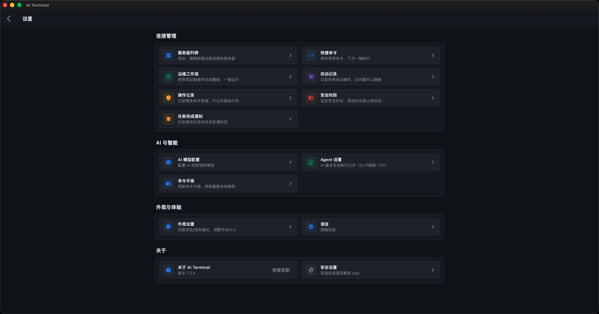
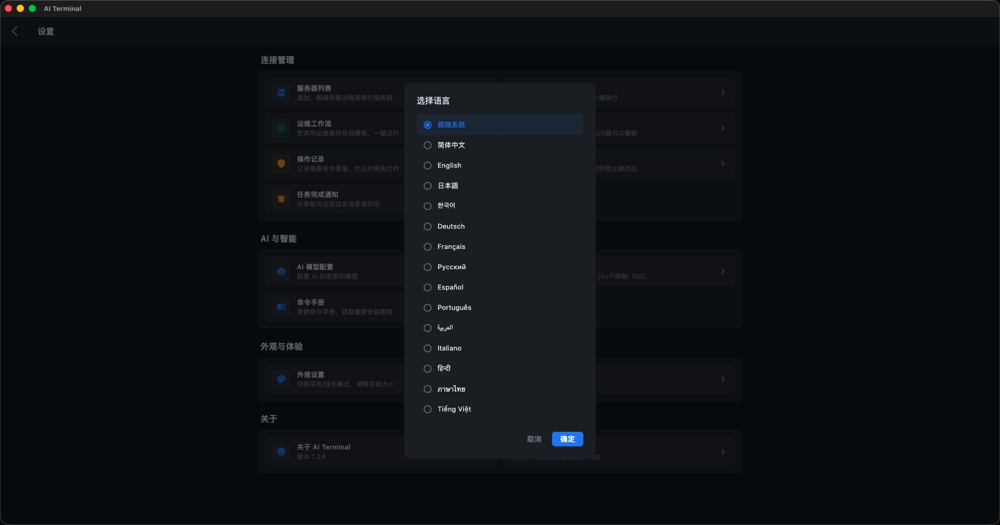

A next-generation SSH & local terminal with built-in AI agent, server monitoring, ops runbooks, 3-level safety guard, and zero-plaintext credential storage. Available everywhere you code.
Real screenshots from AI Terminal v1.3.5 on macOS.
用自然语言描述需求，AI 自动生成并执行命令，支持多步推理和自动纠错。
真实的 SSH 和本地 PTY 终端，支持实时流式输出、交互式命令、颜色和快捷键。
实时监控 CPU、内存、磁盘、网络，异常自动高亮告警，历史趋势一目了然。
一键广播命令到多台服务器，实时回显独立显示，批量运维像说话一样简单。
SafetyGuard 自动分类：安全自动执行、警告需确认、危险需明确批准。
内置图形化 SFTP 文件浏览器，拖拽上传下载，远程文件管理像本地一样方便。

Upgrading one machine is an operation, upgrading a hundred machines is also an operation. Multi-orchestration makes batch ops as simple as talking.

Let workflows handle repetitive operations, save your energy for problems that truly need thinking.

From model selection to interface style, from security policy to notification preferences, everything can be adjusted to your habits.

Wherever you come from, AI Terminal can work in your most familiar language.
以上截图中的 AI 功能由 小米 mino-v2.5-pro 大模型驱动
5 powerful new features for modern DevOps and SRE teams.
Real-time CPU, memory, disk & network monitoring across all your servers.
Full audit trail of every operation with searchable change history.
Save and reuse operational workflows. One-click execution of complex tasks.
Stay informed with alerts for monitoring, task completion, and system events.
Beautiful glassmorphism design with smoother animations and refined visuals.
Every feature designed with security, speed, and intelligence in mind.
Auto mode executes complete workflows. Assistant mode guides you step-by-step. You choose the level of autonomy.
Real-time monitoring of CPU, memory, disk, and network across all your servers with historical trend charts.
3-level safety classification — Safe / Warning / Dangerous. Every AI-generated command is checked before execution.
Complete audit trail of every operation. Searchable change history with timestamps, operators, and details.
Full SSH client with connection pooling, multi-session support, and real-time streaming output.
Create reusable operational workflows. Save complex multi-step tasks as runbooks for one-click execution.
Real pseudo-terminal on macOS, Linux & Windows. Run any local command with full interactive support.
Unified notification center for monitoring alerts, task completions, and system events. Never miss an update.
Credentials encrypted at the system level. Optional biometric unlock with Face ID / Touch ID / Fingerprint.
Execute commands across multiple servers simultaneously. Batch operations and coordinated deployments made easy.
Offline knowledge base powers the AI with domain-specific expertise. Downloadable and always improving.
One codebase, all platforms. macOS, Windows, Linux, iOS & Android — built with Flutter.
Describe what you want in natural language. AI Terminal handles the rest.
Type in natural language: "检查所有服务器CPU使用率" or "deploy to staging"
AI Agent parses your intent and generates the exact shell commands needed, streaming the response in real-time.
Every command is classified: Safe runs automatically, Warning asks for confirmation, Dangerous requires explicit approval.
Commands run on local or remote terminals. Results are fed back to AI for multi-step reasoning and follow-up.
Seamless experience across all your devices.
Free and open source. Download v1.3.5 for your platform.
Download the knowledge database for offline AI assistance. Choose the version that matches your app.
Open source, free forever. Start using AI Terminal v1.3.5 today.
View on GitHub